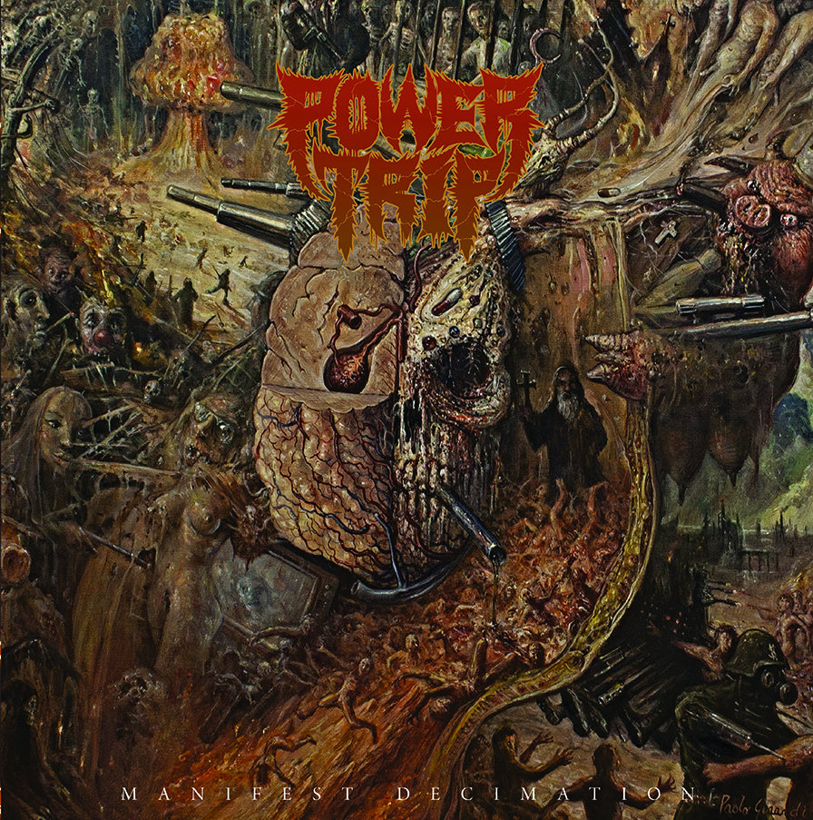
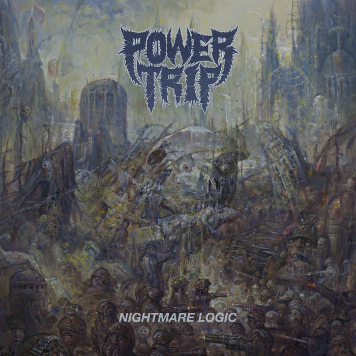

Manifest Decimation
Manifest Decimation is the debut album by American thrash metal band Power Trip. It was released on June 11, 2013 through Southern Lord Recordings.
The album is a precursor to Nightmare Logic, which launched them to stardom with their brand of old school thrash metal.
The album was produced, engineered, mixed, and mastered by Arthur Rizk (additional tracking done in Argyle, Texas by Daniel Schmuck).
Track List :
Manifest Decimation
Heretic's Fork
Condotioned to Death
Murderer's Row
Crossbreaker
Drown
Power Trip
Hammer of Doubt

Nightmare Logic
Nightmare Logic is the second studio album by American thrash metal band Power Trip.
It was released on February 24, 2017 through Southern Lord Records and was met with critical acclaim.
This marked the second collaboration with producer Arthur Rizk, having previously worked with Rizk on their debut album Manifest Decimation (2013).
This is the last Power Trip studio album to feature vocalist Riley Gale before he died on August 24, 2020.
Nightmare Logic was well-received by both critics and fans, and was responsible for bringing Power Trip to the attention of a mainstream metal audience.
Critics praised its raw intensity, powerful riffs, as well as the band's growth in songwriting. It has appeared on a number of critics' lists ranking the year's top metal albums,
as well as lists ranking the top metal albums of the decade.
Track List :
Soul Sacrifice
Executioner’s Tax (Swing of The Axe)
Firing Squad
Nightmare Logic
Waiting Around to Die
Ruination
If Not Us Then Who
Crucifixation